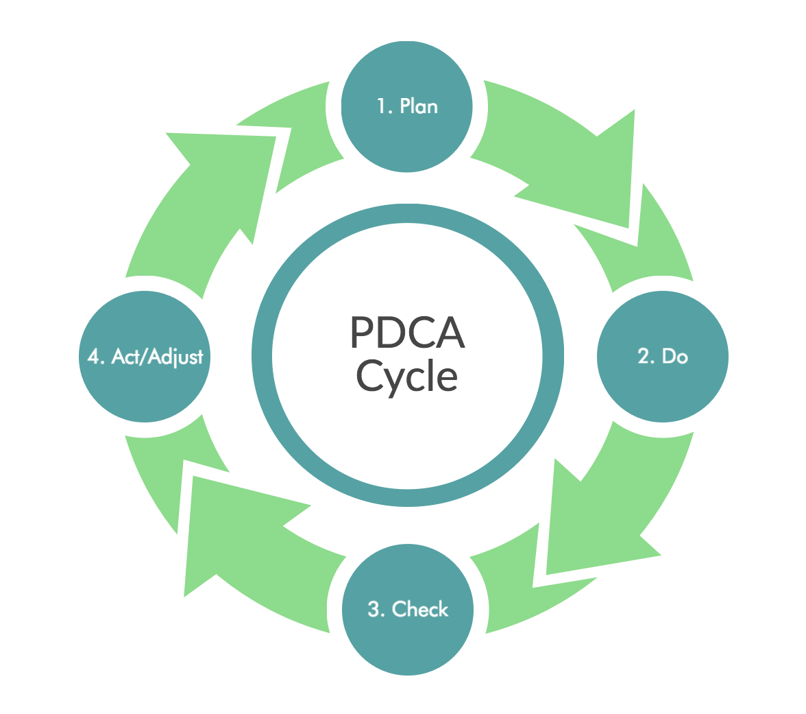

3 PDCA cycle
This cycle was devised by Edwards Deming in the 1950s:
It is a simple model, which can make the steps easy to remember, but you can add as much detail as necessary to the various stages. When using the PDCA cycle to solve problems and make decisions, the stages include, for example:
- Plan
eg identify the problem and root causes; collect data; set objectives; allocate resources and training. - Do
eg implement the plan and take action. - Check
eg review and measure progress against objectives; analyse strengths and weaknesses of the plan. - Act/Adjust
eg praise success; identify further improvements; communicate any changes to the people involved.